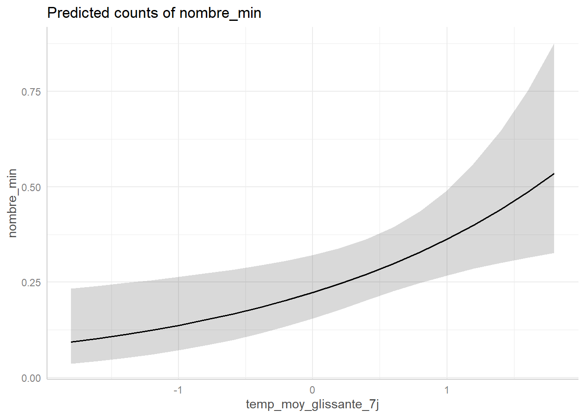

Analyse des observations de Blongios nain (Ixobrychus minutus) dans la Reserve Naturelle du Bagnas
1. Introduction
Le Blongios nain (Ixobrychus minutus) est une espèce emblématique des zones humides, inféodée aux roselières inondées, aux berges de lacs et de cours d’eau ainsi qu’aux marais, qui lui fournissent à la fois des ressources alimentaires et des sites favorables à la nidification. Particulièrement discret, il demeure le plus souvent dissimulé au sein de la végétation, ce qui rend son observation difficile. Il s’agit d’une espèce migratrice, quittant les sites de reproduction européens à la fin de l’été pour hiverner principalement en Afrique subsaharienne.
L’Inventaire national du patrimoine naturel réalisé entre 2013 et 2015, indique que l’espèce est présente dans une cinquantaine de départements de France métropolitaine, notamment dans le nord du territoire (Hauts-de-France, Île-de-France), l’est (Grand Est, Auvergne-Rhône-Alpes), les départements littoraux du sud le long de la Méditerranée, ainsi que dans quelques départements du centre du pays. Toutefois, un déclin des populations est observé depuis les années 1970, principalement lié à la raréfaction et à la dégradation de ses habitats de reproduction. En conséquence, le Blongios nain est classé « En danger » (EN) sur la Liste rouge nationale, tandis qu’il est considéré en « Préoccupation mineure » (LC) à l’échelle européenne. Dans ce contexte, la réserve naturelle du Bagnas a exprimé le besoin de disposer d’une analyse approfondie des données d’observation du Blongios nain collectées sur le site entre 1990 et 2021.
L’objectif est, dans un premier temps, de comparer les données opportunistes à celles issues de protocoles standardisés de suivi — notamment les points d’écoute visant la détection des mâles chanteurs — afin d’évaluer l’efficacité et la pertinence des différents dispositifs de suivi. Dans un second temps, il s’agit de caractériser la structure spatio-temporelle de la présence du Blongios nain au sein de la réserve. Nous nous sommes ainsi interrogés sur la structure de l’effort de prospection au cours du temps, tant à l’échelle annuelle que journalière, ainsi que sur les facteurs influençant la détection de l’espèce lors des prospections, en lien avec sa phénologie et les modalités d’échantillonnage.
3. Analyses
3.1 Analyses exploratoires
A) Répartition temporelle des observations de Blongios nain depuis 1990
En premier lieu, nous voulions visualiser l’absence et la présence du Blongios nain sur toute la période d’étude. Pour cela, nous avons créé une grille années X semaines qui montre toutes les sorties avec et sans observation d’individus. Les cases du graphiques sont colorées de manière à différentier (i) les semaines avec observation d’un Blongios lors d’un protocole standardisé, (ii) les semaines avec observation opportuniste d’un Blongios, (iii) les semaines avec à la fois des observations opportuniste et par protocole standardisé, et (iiii) les semaines sans observation d’un Blongios.

Premièrement, on observe que l’ensemble des observations est concentré approximativement entre les semaines 16 et 35 (printemps–été), ce qui correspond bien à la période de présence du Blongios nain sur le littoral méditerranéen français. Le protocole de suivi standardisé a débuté en 2014, avec plusieurs passages réalisés tous les deux ans environ (entre 3 et 8 passages selon les années). Enfin, les résultats suggèrent une diminution de la présence du Blongios nain sur la réserve au cours du temps. En effet, le nombre total de semaines avec au moins une observation semble décroître, avec seulement deux semaines de présence détectée en 2024 contre onze en 2004. Cette tendance pourrait indiquer soit un déclin de la population globale, soit une diminution de l’attractivité écologique du site du Bagnas pour la population nicheuse.
B) Répartition spatiale des observations de Blongios nain issues du protocole standardisé de suivi
Ensuite, nous voulions visualiser la répartition spatiale des observations de Blongios nain issues du protocole standardisé de suivi. Pour cela, nous avons créé une carte avec des cercles dont la taille est proportionnelle au nombre total d’individus entendus/vus sur chaque site d’écoute depuis le début du protocole en 2014.
Sur cette carte on peut voir que certains sites semblent plus propice à l’observation d’individus de Blongios nain que d’autres. Notamment les sites n°5 et 6 semblent être les plus favorables à l’observation de cette espèce.
C) Effort d’échantillonnage journalier et répartition temporelle journalière des observations protocolées de Blongios nain
Ici, nous voulions comprendre à quel moment de la journée était réalisé le protocole, et quelles étaient les horaires qui permettaient une meilleure détection de l’espèce. Pour cela, nous avons réalisé un graphique qui représente l’effort d’échantillonnage ainsi que le nombre d’obervations cumulés au cours du protocole blongios pour chaque heure de la journée de 2014 à 2025. L’effort d’échantillonnage est représenté par la somme des sorties effectuées.

Ici, on observe que les sorties protocolées sont majoritairement réalisées entre 6 h et 7 h du matin ainsi qu’entre 20 h et 21 h, ce qui correspond aux plages horaires du protocole standardisé et aux périodes d’activité maximale du Blongios nain. Ces créneaux apparaissent pertinents, puisque c’est durant ces périodes que l’espèce est le plus fréquemment détectée
D) Effort d’échantillonnage journalier et répartition temporelle journalière des observations opportunistes de Blongios nain
Similairement, ici nous voulions comprendre à quel moment de la journée était faites les sorties hors protocole standardisé, et quelles étaient les horaires qui permettaient une meilleure détection de l’espèce sur ce type de données. Pour cela, nous avons réalisé un graphique qui représente le nombre d’obervations hors protocole cumulés pour chaque heure de la journée de 1997 à 2023. Il est important de préciser que les sorties hors protocole où l’heure d’observation est identifiée sont très rares (n=46), et correspondent en majorité à des données produites lors d’autres protocoles non dédiés à cette espèce.

On remarque que hors protocole standardisé, le Blonios nain est essentiellement entre 6 et 11h du matin et entre 19 et 21h du soir, ce qui correspond bien à son pic d’activité (aube et crépuscule), et au horaires de prospections choisies pour le protocole dédié au Blongios nain.
3.2. Modèles statistiques
Maintenant que nous avons exploré les données, nous avons construit différent modèles statistiques pour voir si :
il y a des tendances temporelles (intra- et inter- annuelles) significatives dans la présence et l’abondance du Blongios nain dans la réserve
il y a des différences spatiales (entre sites d’écoute) significatives dans la présence et l’abondance du Blongios nain dans la réserve
quelles variables environnementales (climatiques et hydrologiques) influencent la présence et l’abondance du Blongios nain
Pour les analyses de présence et d’abondance, nous utilisons uniquement les données d’observation du blongios provenant des observations protocolées. Ce jeu de données sera nommé Protocole_SuiviBlongios
A) Modèles de présence/absence du Blongios Nain
En premier lieu, nous réalisons un modèle pour essayer d’expliquer l’absence/présence du Blongios nain sur les 10 années de suivi protocolé. Pour cela nous utilisons la variable Occurence qui notifie la présence ou l’absence d’une observation de Blongios à chaque sortie.
Nous admettons que le modèle de base comprend uniquement les variables temporelles (année, jour julien) et spatiales (site d’écoute). Ensuite, nous comparons ce modèle de base à un modèle complet intégrant les variables environnementales (climatiques et hydrologiques). Un test de corrélation entre les variables environnementales est réalisé au préalable pour éviter la colinéarité entre variables explicatives.

Call:
glm(formula = Occurence ~ annee + julian + I(julian^2) + nom_lieu,
family = binomial, data = Protocole_SuiviBlongios)
Coefficients:
Estimate Std. Error z value Pr(>|z|)
(Intercept) 1.443e+02 1.255e+02 1.150 0.250
annee -7.688e-02 6.229e-02 -1.234 0.217
julian 1.193e-01 1.390e-01 0.858 0.391
I(julian^2) -3.747e-04 4.018e-04 -0.933 0.351
nom_lieuButorTalèveBlongios-2 -9.997e-01 8.938e-01 -1.119 0.263
nom_lieuButorTalèveBlongios-3 -9.997e-01 8.938e-01 -1.119 0.263
nom_lieuButorTalèveBlongios-4 2.471e-01 6.873e-01 0.359 0.719
nom_lieuButorTalèveBlongios-5 9.076e-01 6.432e-01 1.411 0.158
nom_lieuButorTalèveBlongios-6 -2.077e-01 7.436e-01 -0.279 0.780
nom_lieuButorTalèveBlongios-7 -1.706e+01 1.261e+03 -0.014 0.989
nom_lieuButorTalèveBlongios-8 -1.739e+00 1.139e+00 -1.527 0.127
nom_lieuButorTalèveBlongios-9 -5.459e-01 7.963e-01 -0.685 0.493
(Dispersion parameter for binomial family taken to be 1)
Null deviance: 191.60 on 237 degrees of freedom
Residual deviance: 164.23 on 226 degrees of freedom
AIC: 188.23
Number of Fisher Scoring iterations: 17
Call:
glm(formula = Occurence ~ annee + julian + I(julian^2) + nom_lieu +
temp_moy_glissante_31j + pluie_moy_glissante_31j + pluie_moy_glissante_7j +
pluie_1h + AssecT_1 + Profondeur, family = binomial, data = Protocole_SuiviBlongios)
Coefficients:
Estimate Std. Error z value Pr(>|z|)
(Intercept) 1.263e+02 2.360e+02 0.535 0.593
annee -7.240e-02 1.125e-01 -0.643 0.520
julian 2.606e-01 2.931e-01 0.889 0.374
I(julian^2) -7.337e-04 7.324e-04 -1.002 0.316
nom_lieuButorTalèveBlongios-2 -1.007e+00 9.056e-01 -1.112 0.266
nom_lieuButorTalèveBlongios-3 -1.007e+00 9.056e-01 -1.112 0.266
nom_lieuButorTalèveBlongios-4 -1.946e-01 7.580e-01 -0.257 0.797
nom_lieuButorTalèveBlongios-5 9.480e-01 6.612e-01 1.434 0.152
nom_lieuButorTalèveBlongios-6 -1.946e-01 7.580e-01 -0.257 0.797
nom_lieuButorTalèveBlongios-7 -1.710e+01 1.266e+03 -0.014 0.989
nom_lieuButorTalèveBlongios-8 -1.757e+00 1.148e+00 -1.530 0.126
nom_lieuButorTalèveBlongios-9 -5.432e-01 8.096e-01 -0.671 0.502
temp_moy_glissante_31j -1.600e-01 4.025e-01 -0.398 0.691
pluie_moy_glissante_31j -1.181e+01 1.792e+01 -0.659 0.510
pluie_moy_glissante_7j -6.119e+00 7.796e+00 -0.785 0.433
pluie_1h 3.863e+00 1.975e+01 0.196 0.845
AssecT_1total 7.099e-01 9.642e-01 0.736 0.462
Profondeur -1.461e+00 3.314e+00 -0.441 0.659
(Dispersion parameter for binomial family taken to be 1)
Null deviance: 181.29 on 227 degrees of freedom
Residual deviance: 150.82 on 210 degrees of freedom
(10 observations effacées parce que manquantes)
AIC: 186.82
Number of Fisher Scoring iterations: 17Nous obervons que les trois variables de température sont fortement corrélées entre elles (R>0.8), donc nous conservons que la variable de température moyénnée à 7 jours avant la date du suivi. Concernant les précipitations, nous gardons les trois variables (du jour J, moyenne sur 7 et 31 jours).
La variable temporelle interannuelle (année) et intraannuelle (jours julian) n’ont pas d’effet significatif sur la présence de l’espèce, ce qui signifie que la probabilité d’occurrence de l’espèce ne varie pas significativement entre 2014 et 2024 (β = -0.072 ± 0.113, p = 0.52), ni durant la durée du protocole (β = 0.261 ± 0.293, p = 0.374. De même, il n’y a aucun site qui montre une meilleure présence de Blongios sur la réserve, et aucune variables environnementales qui explique significativement l’occurence du Blongios nain.
Graphiques (je pense ne pas mettre)


B) Modèles d’abondance du Blongios nain
Ensuite, nous avons refait les mêmes modèles avec les même variables explicatives, mais avec la variable nombre_min (Abondance). Cela nous à permis de vérifier s’il y avait (i) des tendances temporelles dans les populations de Blongios de la réserve, (ii) des sites avec plus d’individus observés ou (iii) des variables environnementales qui pouvaient influencer le nombre d’individus recensé lors du suivi.
Call:
glm(formula = nombre_min ~ annee + julian + I(julian^2) + nom_lieu,
family = poisson, data = Protocole_SuiviBlongios)
Coefficients:
Estimate Std. Error z value Pr(>|z|)
(Intercept) 5.338e+01 1.032e+02 0.517 0.605
annee -3.205e-02 5.108e-02 -0.628 0.530
julian 1.238e-01 1.224e-01 1.011 0.312
I(julian^2) -3.911e-04 3.567e-04 -1.097 0.273
nom_lieuButorTalèveBlongios-2 -8.646e-01 8.367e-01 -1.033 0.301
nom_lieuButorTalèveBlongios-3 -8.646e-01 8.367e-01 -1.033 0.301
nom_lieuButorTalèveBlongios-4 1.942e-01 6.059e-01 0.321 0.749
nom_lieuButorTalèveBlongios-5 8.307e-01 5.324e-01 1.560 0.119
nom_lieuButorTalèveBlongios-6 2.340e-01 6.056e-01 0.386 0.699
nom_lieuButorTalèveBlongios-7 -1.656e+01 1.099e+03 -0.015 0.988
nom_lieuButorTalèveBlongios-8 -1.558e+00 1.095e+00 -1.422 0.155
nom_lieuButorTalèveBlongios-9 -4.592e-01 7.304e-01 -0.629 0.530
(Dispersion parameter for poisson family taken to be 1)
Null deviance: 149.88 on 237 degrees of freedom
Residual deviance: 120.97 on 226 degrees of freedom
AIC: 213.19
Number of Fisher Scoring iterations: 16
Call:
glm(formula = nombre_min ~ annee + julian + I(julian^2) + nom_lieu +
temp_moy_glissante_31j + pluie_moy_glissante_31j + pluie_moy_glissante_7j +
pluie_1h + AssecT_1 + Profondeur, family = poisson, data = Protocole_SuiviBlongios)
Coefficients:
Estimate Std. Error z value Pr(>|z|)
(Intercept) -4.498e+01 1.827e+02 -0.246 0.806
annee 1.341e-02 8.710e-02 0.154 0.878
julian 2.304e-01 2.382e-01 0.967 0.333
I(julian^2) -6.847e-04 6.020e-04 -1.137 0.255
nom_lieuButorTalèveBlongios-2 -8.503e-01 8.369e-01 -1.016 0.310
nom_lieuButorTalèveBlongios-3 -8.503e-01 8.369e-01 -1.016 0.310
nom_lieuButorTalèveBlongios-4 -1.571e-01 6.711e-01 -0.234 0.815
nom_lieuButorTalèveBlongios-5 8.228e-01 5.326e-01 1.545 0.122
nom_lieuButorTalèveBlongios-6 2.483e-01 6.059e-01 0.410 0.682
nom_lieuButorTalèveBlongios-7 -1.749e+01 1.757e+03 -0.010 0.992
nom_lieuButorTalèveBlongios-8 -1.543e+00 1.096e+00 -1.409 0.159
nom_lieuButorTalèveBlongios-9 -4.448e-01 7.306e-01 -0.609 0.543
temp_moy_glissante_31j -7.976e-02 3.260e-01 -0.245 0.807
pluie_moy_glissante_31j -1.107e+01 1.487e+01 -0.744 0.457
pluie_moy_glissante_7j -6.602e+00 7.180e+00 -0.919 0.358
pluie_1h 8.811e+00 1.768e+01 0.498 0.618
AssecT_1total -1.487e-02 7.824e-01 -0.019 0.985
Profondeur -1.372e+00 2.640e+00 -0.520 0.603
(Dispersion parameter for poisson family taken to be 1)
Null deviance: 143.32 on 227 degrees of freedom
Residual deviance: 109.66 on 210 degrees of freedom
(10 observations effacées parce que manquantes)
AIC: 209.88
Number of Fisher Scoring iterations: 17La variable temporelle interannuelle (année) et intraannuelle (jours julian) n’ont pas d’effet significatif sur l’abondance de l’espèce, ce qui signifie que le nombre d’individus contacté lors des suivis protocolés de l’espèce ne varie pas significativement entre 2014 et 2024 (β = 0.013 ± 0.087, p = 0.878), ni durant la durée du protocole (β = 0.23 ± 0.238, p = 0.333. De même, il n’y a aucun site de la réserve qui montre un nombre de Blongios observé plus important, et aucune des variables environnementales qui expliquent significativement les variations d’abondance du Blongios nain.
Graphiques (à ne pas mettre je pense)
